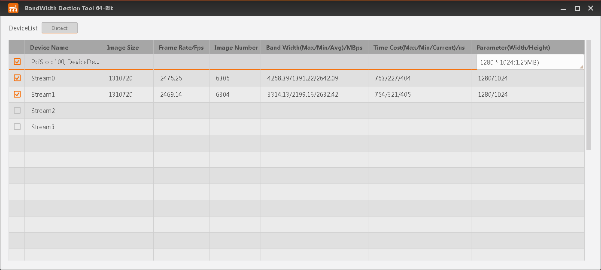

The Bandwidth Detection Tool can test the actual bandwidth of connected
frame grabbers, upon which you can decide if the frame grabber can satisfy application
requirements.
Ensure the Software successfully enumerated frame grabber to be detected.
Note
The Bandwidth Detection tool only supports some CoaXPress frame grabbers and
XoFLink frame grabbers developed by
Hikrobot.
-
Click to open the tool.
-
Select the frame grabber, and select desired
stream.
Note
The amount of available streams is subject to frame grabber
type.
-
Set the size of image with Parameter (Width/Height).
Note
It is recommended to test all sizes to test the stability of
the interface under different image sizes.
-
Click Detect to test the bandwidth of selected
streams.

Figure 1 Detecting Selected Stream Bandwidth
During testing, if any of the following situation occurs, you need to examine
your frame grabber and the PCIe interface.
-
The sum of Frame
Rate/Fps is significantly smaller than the
theoretical frame rate: Examine the PCIe interface.
-
The sum of Band
Width(Max/Min/Avg)/MBps is significantly smaller than
the theoretical bandwidth: Examine the PCIe interface.
-
If the Image Number does
not accumulate: you need to examine the frame grabber.
- Optional:
Click Stop Detect to pause testing.